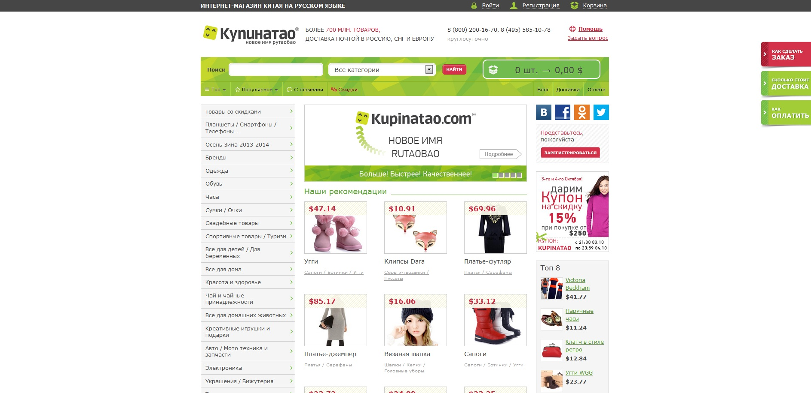
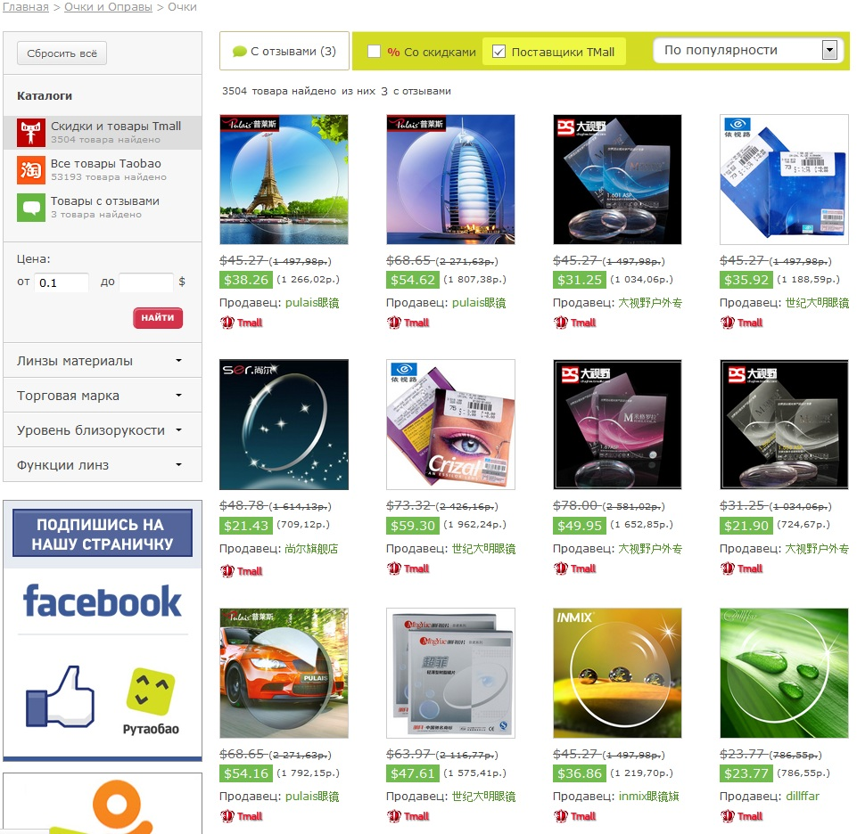
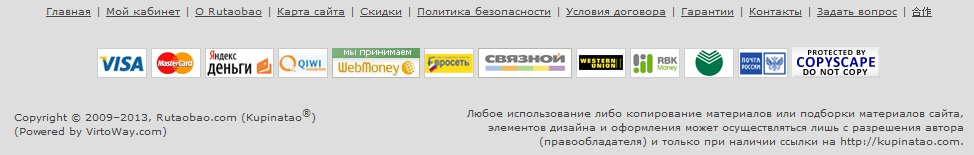
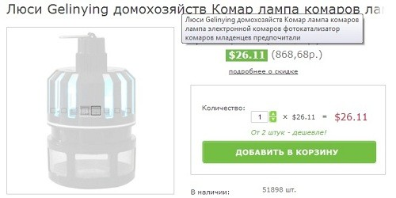
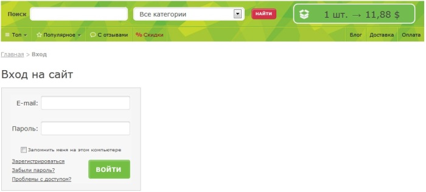
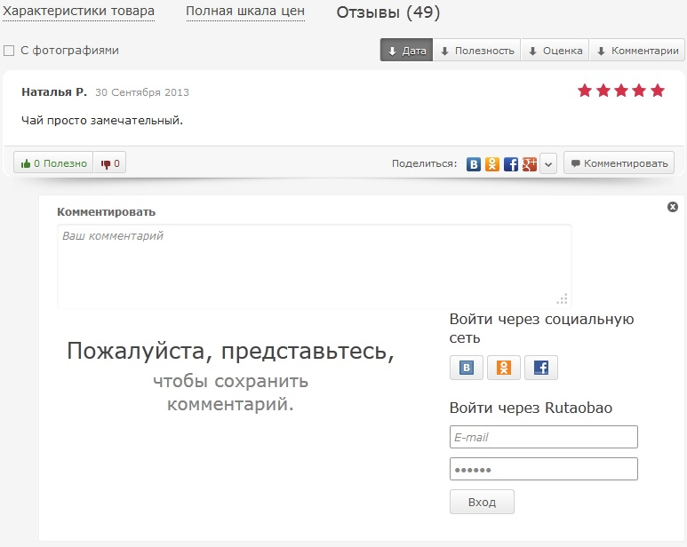
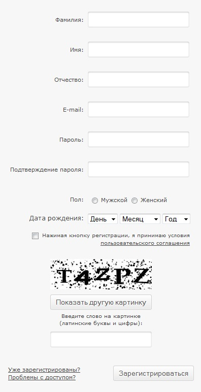

Анализ Сайта
www.rutaobao.com

Что не нравится читателям при перемешение:
1.Слишком запутанное меню, большое и очень путает посетителя. Сложно разобраться и найти нужный товар. Из главного меню я очки не нашел, когда в итоге нашел раздел, то там оказались линзы, вместо ожидаемого мною увидеть очки. Запутавшийся клиент потерянный клиент.

2. Наличие мелких кликабельных элементов.

3. Медленная загрузка страниц, что в результате клиенты могут уйти к более быстрым сайтам.
Чтение:
4. Орфографические и грамматические ошибки. Наличие подобных недочетов вызывает сомнения в профессионализме сотрудником занимающиеся данным сайтом.

5. Очень мелкие буквы в некоторых областях сайта, приходится приглядываться.
Транзакции на сайте:
6. Нет возможности купить для незарегистрированных пользователей. Это один из самых больших недочетов, куда уходят заказы.

7. Нет быстрого оформления заказа. Либо это «быстрое оформление» требует заполнения больше 2-х полей. Среди покупателей скорее всего существует категория людей, которым нужно все получить быстро. Они не хотят тратить свое время на заполнение форм. Не стоит их игнорировать. Нужно дать им возможность альтернативного способа заказа. Этот способ должен быть максимально простым. Ввести номер телефона и удобное время звонка и мы Вам перезвоним. Минимум действий при оформлении заказа – важное конкурентное преимущество. Все большую популярность получает удобная регистрация через аккаунты в соцсетях или почтовых сервисах – она совсем не требует заполнения никаких полей, кроме телефона.
8. Не выводятся предупреждения о долгих операциях. Если сложный поиск по базе товаров сайта занимает длительное время, нужно сообщить клиенту. Для того чтобы он не думал, что на сайте «все зависло и умерло».
9.Привязка к регистрации для добавления комментариев. Желание пользователя оставить комментарий к заинтересовавшей его статье мгновенно улетучивается, когда он сталкивается с необходимостью регистрации – вводить электронный адрес, придумывать себе логин и какой-то мудреный пароль.

10. При оформлении заказа требуют заполнить формы из 9 пунктов. Очень часто человека пугает необходимость такого заполнения. Такая вот длинная форма заказа приводит к большому проценту недооформленных заказов.
